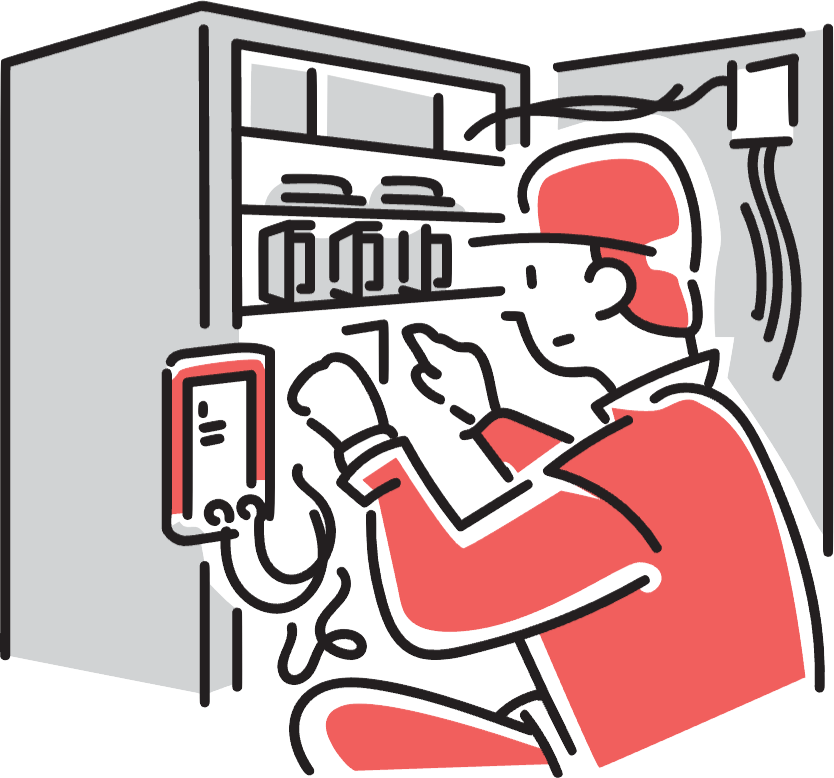

はじめに
- スマホの写真を整理したい
- パソコンを買い替えたい
- 故障したかも
- もっと便利に使いたい
- 初めてで使い方がわからない
- 親が使いこなせていない
スマートフォンやパソコンは便利ですが、ちょっとした設定や不具合で困ることも少なくありません。
「誰に聞けばいいのかわからない…」
株式会社LWは、そんな時に気軽に相談できる、まちのITべんりやさんでありたいと考えています。
ひとり一人の状況に合わせて、わかりやすく丁寧にお応えします。
ITに関する小さな疑問からトラブルまで、お気軽にご相談ください。
サービスのご紹介
ITの活用をサポート
- スマートフォンの使い方
- OSやアプリの便利機能ご紹介など
- LINEやメール、ビデオ通話
- 写真、音楽、動画
- 地図
- OSやアプリの便利機能ご紹介など
- パソコンの選び方
- パーツ選びやデスクトップの組み立てのお手伝いなど
- Pythonプログラミング初心者講座
- 環境構築から、GUIやAPIが動作するまで
- 他
スマートフォンやパソコンを、もっと使いこなせるようになりたい方へ。
これから始める方、挫折した方も歓迎です。
学びの明確な目的（基礎を広く学びたい、画面を作りたい、等）や、使用したいテキストがある場合は、可能なかぎりお客様に合わせたカリキュラムを組みます。
基本はマンツーマンですが、複数人でのご利用もご相談ください。
ITの設定・修理

- ルーターの初期設定
- パソコンの初期設定や修理
- 家のインターネットを早くしたい
- メールやプリンターが使えなくなった
- 他
パソコン、スマートフォン、ネットワーク等のIT機器の修理や設定。
ちょっとした設定から、故障の修理まで、幅広く対応します。
まずはご相談いただき、内容を確認したうえで、対応可能な範囲や料金についてご説明いたします。
料金
まずはこちらにご相談ください。
ケースごとの料金例
- アドバイス（お客様側で作業）
- アプリや機能のご紹介など
- 1,000円〜
- 不具合の切り分けや、作業の手順のご説明など
- 1,000円〜
- アプリや機能のご紹介など
- 体験レッスン、学びのサポート
- パソコンの組み立て初心者コース（最低2時間〜）
- 1万円〜／1時間
- Pythonプログラミング初心者コース（最低2時間〜）
- 1万円〜／1時間
- パソコンの組み立て初心者コース（最低2時間〜）
- 修理や設定等の作業
- 写真ファイル等のバックアップ
- 5,000円〜
- デジタル家電の初期設定
- 3,000円〜
- WindowsのOSリカバリーやシステム障害対応
- 10,000円〜（診断料込）
- 写真ファイル等のバックアップ
- 特記事項
- 作業費は内容によって大きく変わります
- 作業に必要なパーツ代、その調達にかかる諸費用は事前ご連絡のうえ、お客様にてご負担いただきます
- 営業時間外の対応が発生した場合、別途費用をご請求いたします
- 別途教材費、診断料、出張費がかかる場合があります